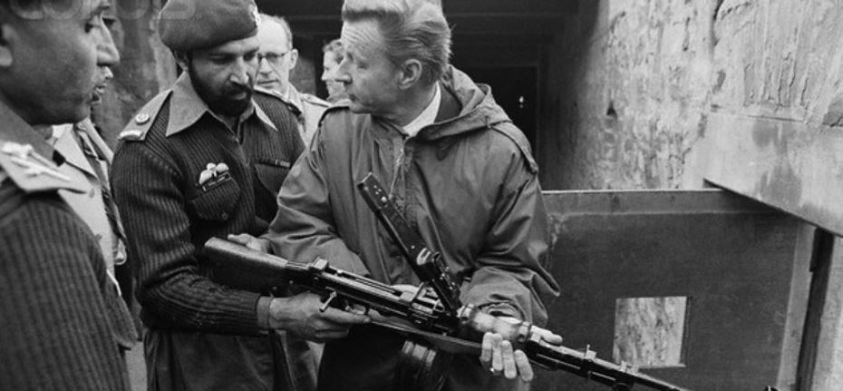
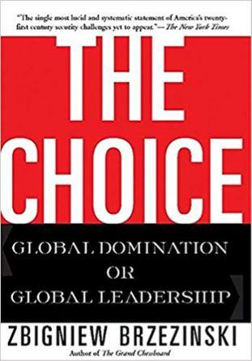
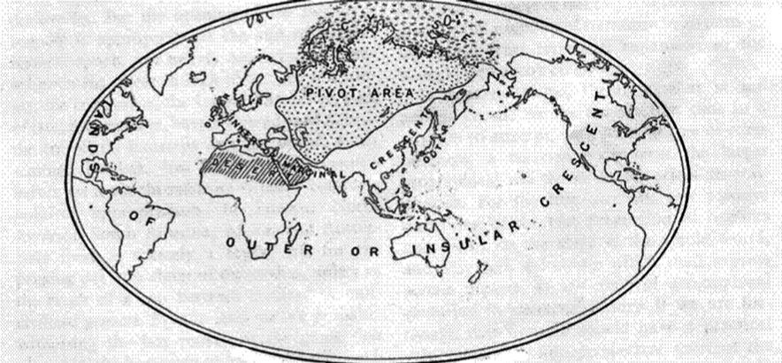

Le 25 août 2007, le candidat à la présidence des Etats-Unis Obama avait reçu le soutien du Docteur Zbigniew Brzezinski, contre la candidature d’Hillary Clinton sous le prétexte (officiel) que « le fait d’avoir été première dame ne préparait pas à devenir présidente » ¹. Après deux mandats républicains qu’il avait fortement critiqués, ce docteur, proche de David Rockefeller, avait affirmé que l’Amérique avait besoin d’un nouveau visage et d’une nouvelle définition de son rôle dans le monde.
L’Amérique d’Obama qu’on voyait poindre allait-elle donc respirer, rejeter les choix aberrants de l’orgueilleux et incompétent Donald Rumsfeld, qualifié de « désastre américain » par son biographe Andrew Cockburn, retirer ses troupes d’Afghanistan et d’Irak et remplacer ses invasions par un dialogue multilatéral avec les « Rogue States », les États Voyous, qui refusent obstinément d’ouvrir leurs frontières aux forces de l’OTAN et leurs porte-monnaie au coup de vent démultiplicateurs des banques et des fonds d’investissement de Wall Street ? Quelque chose dans le genre, semblait promettre cet apôtre du Manifest Destiny, en affirmant vouloir rencontrer les leaders iranien et vénézuélien devant l’ex-première dame qui, sans doute vexée par le traitement infériorisant que lui avait réservé le célèbre géopoliticien en la ravalant précisément au rang subalterne d’ex-première dame, l’avait qualifié de « naïf ». On pouvait croire, au moins en passant, et sans prendre parti, qu’il y avait un débat réel au sein du camp démocrate au sujet de la politique étrangère à adopter. Et on pouvait être certain que le climat n’était pas au beau fixe entre la démocrate « hawkish » et le vieil habitué des tours et détours de la diplomatie. Mais comment avait-elle pu le traiter de « naïf » ? Un homme comme lui…
Il s’avère que Zbigniew Brzezinski avait eu du flair en soutenant Obama. Ou bien savait-il, grâce à ses amis du « Center for a New American Security », que le jeune sénateur de l’Illinois deviendrait probablement président ?
Nous n’aurons pas la réponse à cette question mais, ce qui est certain, c’est qu’avant même son élection, Obama s’est empressé de remercier le Docteur Brzezinski¹ et a déclaré pendant le discours sur l’Irak du 9 Septembre 2007, qu’il ne pourrait jamais dire tout le bien qu’il pensait de sa contribution au pays.
Pour compenser ce manque d’exhaustivité avoué en préambule, il s’est contenté de jeter à un public ému quelques éléments d’une carrière et d’un profil exemplaires : le « Doctor » » avait aidé à l’élaboration des accords de Camp David qui avaient permis d’installer une paix durable entre Israël et certains de ses voisins ; il avait, pendant des décennies, formé les spécialistes de la politique étrangère dans les deux partis ; le « Doctor » était « un de nos universitaires les plus exceptionnels », il était « un de nos penseurs les plus exceptionnels », sans compter qu’il avait été « un ami exceptionnel », un homme dont il avait personnellement beaucoup appris et qui l’avait soutenu pendant sa campagne présidentielle. Sans doute pressé par le temps, le président Obama n’a pas pensé, alors, à mentionner un élément clef du tempérament de Brzezinski : sa franchise et son goût pour la vérité. Car il est vrai que le « Doctor » Brzezinski est un homme franc et vrai et sa franchise est une conséquence directe de la force du credo qui l’anime, un credo autrefois affirmé en ces termes par le néoconservateur Project for a New American Century : la domination du monde par l’Amérique est bonne pour l’Amérique et bonne pour le monde.
L’une des meilleure preuves – mais pas la seule – de la franchise du Dr. Brzezinski peut être trouvée dans un entretien reproduit dans le numéro du 15 janvier 1998 du magazine français Le Nouvel Observateur sous le titre : « Oui, la CIA est entrée en Afghanistan avant les Russes…», dans lequel le « Doctor » confirme les propos avancés par l’ancien directeur de la CIA Robert Gates dans ses Mémoires – le même Robert Gates qui, nommé par George Bush fils au Pentagone en 2006, y restera jusqu’en 2011 autant dire presque jusqu’à la fin du premier mandat d’Obama –, selon lesquels les services secrets étasuniens étaient entrés en Afghanistan bien avant la date admise par « l’histoire officielle » qui fait débuter cette « aide » dans le courant des années 80. Selon Brzezinski, qui sait de quoi il parle et qui n’était pas obligé d’en parler :
« C’est en effet le 3 juillet 1979 que le président Carter a signé la première directive sur l’assistance clandestine aux opposants du régime prosoviétique de Kaboul. Et ce jour-là j’ai écrit une note au président dans laquelle je lui expliquais qu’à mon avis cette aide allait entraîner une intervention militaire des Soviétiques ».
Or les Russes étaient entrés dans le pays le 24 décembre 1979. Après avoir avoué cette manœuvre, le géopoliticien préféré d’Obama joue les fines gueules mais on comprend :
« Nous n’avons pas poussé les Russes à intervenir, mais nous avons sciemment augmenté la probabilité qu’ils le fassent ».
Pas de complot donc mais la mise en place d’une action dans le seul but d’augmenter la probabilité de la réponse à cette action. Au journaliste qui, un peu joueur, lui demande s’il a des regrets, l’aimable professeur répond :
« Regretter, pourquoi ? Cette opération secrète était une excellente idée. Elle a eu pour effet d’attirer les Russes dans le piège afghan et vous voulez que je le regrette ? Le jour où les Soviétiques ont officiellement franchi la frontière, j’ai écrit au président Carter, en substance : « Nous avons maintenant l’occasion de donner à l’URSS sa guerre du Vietnam » et de conclure avec une désinvolture de cowboy surdoué et plein d’un bon sens accessible à tous : « Qu’est-ce qui est le plus important au regard de l’histoire du monde ? Les talibans ou la chute de l’empire soviétique ? Quelques excités islamistes où la libération de l’Europe centrale et la fin de la guerre froide ? ».
Selon le « Doctor », ceux qui prétendent que « le fondamentalisme islamique représente aujourd’hui une menace mondiale » ne racontent que des « sottises ». Et d’ajouter :
« Il n’y a pas d’islamisme global. Regardons l’Islam de manière rationnelle et non démagogique ou émotionnelle. C’est la première religion du monde avec 1,5 milliard de fidèles. Mais qu’y a t-il de commun entre l’Arabie Saoudite fondamentaliste, le Maroc modéré, le Pakistan militariste, l’Égypte pro-occidentale ou l’Asie centrale sécularisée ? Rien de plus que ce qui unit les pays de la chrétienté ».
Alors, que le Docteur Brzezinski soit un homme franc ne doit pas faire de doute dans notre esprit. Ce qui ne doit pas faire de doute non plus c’est que pour le bon Docteur, l’ennemi juré de l’Amérique, l’empêcheur de tourner en rond, le rocher sur lequel s’épuise la vague bienfaisante de la mondialisation militaro-économique, c’est la Russie.
Concernant son approche de l’intégrisme islamiste, je vous laisse juge, chacun son point de vue puisque nous vivons à l’ère de l’opinion : la plupart des gens se rangeront, je n’en doute pas, du côté de la parole assenée, répétée et resservie par nos journalistes et nos politiques, ces gens trop vus et trop entendus, ces deux pouvoirs au service des lobbies affairistes qui ont pour fonction principale de confisquer ma parole et la vôtre et de nous faire avaler des couleuvres, assez souvent islamistes. Personnellement, j’ai fait mon choix : entre le « Doctor » Brzezinski et tous ces habitués du mensonge et de la désinformation, qui appartiennent à une même Nomenklatura bardée d’arrogance et gonflée de mépris, j’ai choisi le « Doctor ».
Parce qu’il a joué un rôle et qu’il le dit, parce qu’il y croit et qu’il le dit et parce qu’à moi aussi, il m’a appris beaucoup de choses. Évidemment, je ne partage pas son credo concernant le rôle de l’Amérique et je crois, contrairement à lui, que la domination américaine n’est bonne ni pour l’Amérique, ni pour le monde. Mais ça ne m’empêchera pas de le croire quand il parle de faits.

Le « Doctor » Zbigniew Brzezinski prépare la chasse aux Russes, Passe de Khyber, au Pakistan, à quelques kilomètres de la frontière afghane, le 3 février 1980. Scène rapportée par le Washington Post du 4 février 1980
« Qui domine l’Europe orientale, domine le Heartland, qui domine le Heartland domine l’île mondiale », c’est à-dire l’Eurasie. C’est grâce à cette phrase, écrite en 1904, que le géographe Halford Mackinder est devenu célèbre. Or le Heartland (la zone pivot), lorsqu’on regarde la carte publiée dans l’article de Mackinder, c’est grosso modo la Russie actuelle, européenne et asiatique, le Caucase, l’Asie Centrale et l’Iran.
Dans le numéro de septembre/octobre 1997 du magazine Foreign Affairs, Zbigniew Brzezinski signe quant à lui un article intitulé « A Geostrategy for Eurasia » dans lequel il prétend pousser plus loin la pensée hégémonique de son prédécesseur.
Pour lui, la Russie vit actuellement recluse dans la nostalgie de son passé impérial, une nostalgie qui l’empêche de voir le présent et d’envisager l’avenir avec pragmatisme. Plutôt que de faire preuve de réalisme, la Russie est régulièrement tentée de « s’engager dans un effort futile afin de regagner son statut de puissance mondiale ». Or ça, pour Zbigniew Brzezinski, c’est du passé, et la Russie doit cesser de vivre dans la contemplation de ce passé doré comme les cieux des vieilles icônes.
D’abord, la Russie souffre d’une perte de vitesse démographique qui ne lui permettra pas de continuer à gouverner un pays de 17 millions de kilomètres carrés. Ensuite, sa bureaucratie, trop lourde et centralisée, n’a pas permis à cet immense territoire de se développer. Aussi, pour que l’ensemble reste tenable et évolue, le pays doit-il « se moderniser » et se décentraliser.
Zbigniew Brzezinski, que rien n’arrête et qui pense à tout, prend la carte de la Russie et, en deux traits pointillés, nous fabrique une « confédération » de trois États : à l’ouest, la Russie d’Europe, au centre, une République sibérienne et une République extrême orientale donnant sur l’océan Pacifique (voir l’image d’en-tête), un découpage qui, selon lui, permettra de libérer les forces vives trop longtemps contenues et d’accroître les relations commerciales de ces territoires nouveaux avec leurs voisins. Et il ne s’arrête pas là…
Dans un ouvrage publié en 2004 et intitulé « The Choice: Global Domination or Global Leadership », il approfondit son idée en prétendant qu’« un effort international pour développer et coloniser la Sibérie pourrait stimuler un authentique rapprochement entre les Européens et les Russes ». Pour lui, la Sibérie est une nouvelle « Alaska », une nouvelle « Californie », « un Eldorado pour des pionniers aventuriers », une « source de grande richesse » et d’« investissements profitables ». Pris dans son élan géopolitique, il envisage même la transformation de la Sibérie en un bien commun eurasiatique exploité dans un esprit de partage. Pour lui, cette évolution aurait l’avantage de « stimul[er] une société européenne repue » grâce à cette « excitante nouvelle frontière » à conquérir. Une sorte de « Drang nach Osten pour le développement » en quelque sorte.
Mais, précise-t-il, on n’y parviendra pas facilement car il faudra passer par un changement intérieur, par la consolidation d’ « un pluralisme géopolitique en Russie ». C’est d’ailleurs là que réside, selon lui, « une des principales tâches qui incombent à la société euro-atlantique » qui va devoir lutter contre les « ambitions impériales résiduelles de la plus grande partie de [l’] élite politique [russe] ». Par quel moyen? En plaçant « des obstacles à toute tentative de restauration impériale » (The Choice). Une idée très ancrée dans la tête du « Doctor »: une Russie décentralisée « serait moins susceptible de se mobiliser en tant qu’Empire » (Foreign Affairs).
En ajoutant quelques détails pris dans ses écrits, nous pensons pouvoir résumer ainsi le credo de Zbigniew Brzezinski. Il se décline en trois nécessités fondamentales que nous explicitons :
La Russie doit cesser de vouloir être un challenger des Etats-Unis et se laisser inféoder par l’Union Européenne et par l’OTAN. Ainsi, elle ne constituera plus une menace pour les Etats-Unis qui pourront sans doute, on le devine, exercer leur pression militaire ailleurs, pourquoi pas en mer de Chine…
La Russie doit se démocratiser, selon la définition qui confond démocratie et adhésion au système occidental du suffrage universel. Cette démocratisation permettra, on le voit partout en Europe et aux Etats-Unis, de porter au pouvoir des technocrates opportunistes, des membres des réseaux atlantistes, pas vraiment intéressés par la question des libertés fondamentales et plutôt indifférents aux questions environnementales. Ces agents agiront conformément aux intérêts des oligarques locaux et étrangers et seront rémunérés par leurs lobbies. Ils fermeront les yeux sur la régulation des opérations des marchés bancaires, accueilleront les délocalisations dans un cadre propice où le code du travail ne mettra pas de barrière à l’exploitation de la main-d’œuvre et feront pression pour que la politique fiscale ne nuise jamais aux profits de ceux qui ont toujours profité. Dit simplement : afin d’augmenter les bénéfices des actionnaires locaux et envahisseurs, ils répandront partout la corruption…
La Russie doit accepter d’être démantelée et de devenir une terre d’accueil de pionniers pour permettre de tirer plus de profits des richesses que recèle un sous-sol inexploité qui deviendra, dès lors, puisque tous les hommes sont frères dans l’extraction, un terrain neutre, une sorte de zone de partage économique. Or, ça tombe bien parce la République de Sibérie, la partie centrale du découpage, correspond précisément au bassin de Sibérie occidentale qui détient, selon un rapport de l’USGS de 2003 (Petroleum, Geology and Resources of the West Siberian Basin, Rusia, par Gregory F. Ulmishek), le plus grand bassin pétrolier du monde, un bassin couvrant une superficie de 2,2 millions de kilomètres carrés, exactement situé entre l’Oural et le fleuve Ienisseï et délimité au nord par la mer de Karal. Comportant plusieurs dizaines de champs pétroliers et gaziers géants et super-géants, il produit les ¾ du pétrole et du gaz de Russie et, en dépit du forage de gros volumes, il reste modérément exploré. Si nous nous tournons maintenant vers le BP Statistical Review of World Energy de 2015, pour nous faire une idée de cette manne à l’échelon mondial, nous découvrons qu’aujourd’hui, la Russie possède 6,1% des réserves mondiales prouvées de pétrole (contre 2,9% pour les Etats-Unis) et qu’elle possède aussi 17,4% des réserves mondiales prouvées de gaz (contre 5,2% pour les Etats-Unis). Remarquons d’autre part que l’Iran détient 18,2% des réserves mondiales de gaz, 9,3% pour le Turkménistan. Inutile de préciser que ces deux pays sont situés dans le Heartland de Mackinder.
On sourit quand on voit la liste des abandons que le Dr. Brzezinski exige de la Russie, tant sur le plan politique (abandon du régime qui permet au pays de garder son indépendance pour le remplacer par un régime apparemment démocratique mais en réalité uniquement électif et, par conséquent, poreux à tout le lobbying et à toutes les corruptions dont sont porteuses les multinationales), que sur le plan économique (abandon de sa souveraineté sur des territoires qui offrent de nombreux avantages économiques grâce à leurs ressources, à leurs infrastructures, et à leurs voies de communication), et stratégique (perte de bases militaires, de bases nucléaires, et d’ouverture sur les mers).
Il est donc difficile de garder son sérieux devant une telle plaisanterie si sérieusement adressée à un lectorat qu’on imagine uniquement préoccupé par l’accroissement de sa puissance et de ses revenus, plus précisément de sa puissance par ses revenus. Un lectorat à l’esprit « pionnier » et qui voit dans la Sibérie une nouvelle Californie, une nouvelle Alaska, l’occasion d’une nouvelle ruée vers l’or, d’une nouvelle Drang nach Osten qui n’aura rien de pacifique mais qui sera, au contraire, un pillage de plus, un pillage en grand, le pillage en technicolor d’un Heartland définitivement conquis et dont la soumission signifiera sans doute, pour ceux qui y croient encore, la fin de l’Histoire.
Rappelons-nous ce qu’a dit le président Obama au sujet du « Doctor » : que celui-ci a, pendant des décennies, formé les spécialistes de la politique étrangère dans les deux partis (c’est le cas de Madeleine Albright) et que cet universitaire exceptionnel, ce penseur exceptionnel, cet ami exceptionnel lui a personnellement beaucoup appris en plus de le soutenir pendant sa campagne présidentielle (les deux allant de pair, évidemment).
Il semblait donc très cohérent que cet Obama-là, poupée politique façonnée et portée à la présidence par les puissants que représente Zbigniew Brzezinski, mène alors une guerre contre la Russie, une guerre qui a commencé par un coup d’Etat en Ukraine, qui s’est poursuivie par l’application de « sanctions » et a fini par une tentative de déstabilisation de l’allié syrien, favorisée il est vrai par l’apparition opportune d’une organisation terroriste justifiant l’ingérence étasunienne dans un Etat souverain, à travers des bombardements et un soutien apporté à une armée de libération composée d’islamistes dits modérés, des islamistes bien utiles et peut-être pas si modérés qu’on le dit, comme ceux que le « Doctor » avait armés dès 1979 en Afghanistan afin d’offrir aux Russes leur « guerre du Vietnam ».
Le but de l’Amérique d’Obama, qui est celle de Brzezinski et qui est celle des élites qui décident de la politique étrangère depuis le Council on Foreign Relations², était de faire reculer la Russie, de l’enfermer dans ses frontières afin de l’assiéger, de la soumettre et de la faire éclater en trois blocs affaiblis, plus faciles à écraser sous les grosses pattes des dinosaures de la mondialisation.
En espérant que ces réflexions permettront au lecteur indécis de mieux comprendre M. Poutine, sa défense de la Syrie, sa résistance devant l’Ukraine, son invasion de la Géorgie et sa politique face aux mouvements « islamistes » dont il conviendrait de connaître les sources de financement avant de clore toute analyse.
B.A.
Notes
1. https://www.youtube.com/watch?v=ASlETEx0T-I
2. Council on Foreign Relations : https://www.cfr.org/
Partager cette page